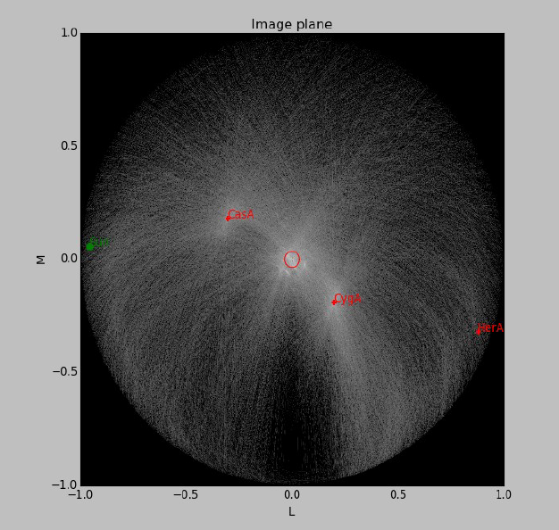

Practical examples [1]¶
In this Chapter, examples of how to inspect and analyse LOFAR data are given. The aim of these exercises is for the User to become familiar with the software used to process LOFAR data and to be able to apply this knowledge to other data sets. Please note that each LOFAR data set is different and special care should be taken when directly applying the methods given in these exercises to other LOFAR data sets.
It is assumed that the user is working on the CEP3 cluster and is familiar with the working environment.
The tutorial data can be staged and downloaded from the LOFAR Long Term Archive. Using the project link on top of the page, select “other projects” in the list of links which will appear, and click on the “LOFARSCHOOL” link in the list of projects. Then, click on the “Show Latest” link at the top of the page, and on “All observations and pipelines”.
Selecting the checkbox in each row and clicking on the “stage selected” link will stage the data and you will get an email with the download instructions. This assumes that you have an user account registered. More info on how to use the LTA interface can be found on the LOFAR wiki.
Sky models and parset files used in the tutorial can be found at the LOFAR GitHub repository.
Flagging, averaging, and demixing¶
The naming convention for each measurement set (MS, also referred to as a sub-band) is Laaaaaa_SAPbbb_SBccc_uv.MS, where Laaaaaa is the observation/pipeline ID, SAPbbb is the sub-array pointing (beam), andSBccc is the sub-band number. We can, for example, obtain a summary of a measurement set using msoverview; for more detailed report, we use the “verbose” argument to the command:
msoverview in=L456104_SAP000_SB001_uv.MS verbose=T
Along with the details of the MS, we get a message: “This is a raw LOFAR MS (stored with LofarStMan)”, which means that the data cannot be handled with Casa. To fix this, we can use the following DPPP parset:
msin=L456104_SAP000_SB001_uv.MS
msout=L456104_SAP000_SB001_uv_copy.MS
msin.autoweight=True
numthreads=4 # so that the nodes are not overloaded, usually can skip this line
steps = [ ]
after execution, the output MS can be opened using the standard CASA tools. Moreover, proper weighting of the data has been implemented.
The data can be inspected using casaplotms [2] as
module load casa
casaplotms &
Open the measurement set from the GUI. Plot the XX correlation only by using the ‘corr’ argument (to speed things up). Select only cross correlations by typing “&” in the ‘antenna’ field (note: * - any antenna; & - cross correlations). There are many large spikes, likely caused by RFI. Click on the ‘Axes’ tab and adjust the y-axis range to something more sensible to find the real astronomical signal (Fig. 53).
Fig. 53 Inspecting the visibilities in casaplotms.
We can also further visualize the impact of RFI in the measurement set using rfigui.
rfigui L456104_SAP000_SB001_uv_copy.MS &
In the smaller menu that pops up, just choose “Open”. Then, in the new window, select index 0 (default) for antenna 1, and index 1 for antenna 2, before clicking on “Load”. This will plot the short intra-station baseline CS001HBA0 - CS001HBA1. There is some clear narrow-band RFI. You can create a power spectrum (using “Plot”). rfigui can flag the data using AOFlagger: “Actions”, then “Execute Strategy”. There are other useful plots in the plot menu.
The AOFlagger can be called with DPPP. Create and run this parset (you can pipe the output to a log file, e.g. DPPP your.parset | tee DPPP.log
msin=L456104_SAP000_SB001_uv_copy.MS
msout=L456104_SAP000_SB001_uv_copy_flg.MS
numthreads=4
steps=[preflagger,aoflagger]
preflagger.baseline=*&&&;RS208HBA;RS210HBA;RS310HBA;RS406HBA;RS407HBA;RS409HBA;
RS508HBA;RS509HBA;RS205HBA&RS307HBA # all these stations on one line
An explanation of the “preflagger” step is as follows. The first argument (arguments separated by semi-colons) removes the autocorrelations (although note that AOFlagger also does this by default). For the next eight arguments, we remove all baselines including the stated remote station as well as one particular baseline between two remote stations (identified as bad data which can affect the calibration). The default AOFlagger strategy is run, but many options can be specified in DPPP (see the LOFAR wiki). We can re-examine the data with casaplotms and see that the RFI has been removed.
The observation we are working on is close to two “A-team” sources: about 16 deg from Cyg A, and 21 deg from Cas A. We need to check if their influence should be “demixed” from the recorded visibilities. Firstly, let’s check their elevations during the observation:
plot_Ateam_elevation.py L456104_SAP000_SB001_uv_copy_flg.MS
We can predict the associated visibilities through simulations. Or, we will run a tool called the Drawer, allowing one to quickly inspect a measurement set and investigate which sources are contributing to the visibilities.
/home/tasse/drawMS/drawMS --ms=L456104_SAP000_SB001_uv_copy_demix_demo.MS
Note that we are running the Drawer on pre-prepared averaged data (to save time); we will learn how to do averaging shortly. Examine the Drawer output. One can see contributions from Cas A and Cyg A. We need to demix their influence from the data.
We need a model of the A-team sources:
showsourcedb in=Ateam.sourcedb mode=patch # verify database contents
Use the following parset for DPPP:
msin=L456104_SAP000_SB001_uv_copy_flg.MS
msout=L456104_SAP000_SB001_uv_copy_flg_demix_avg.MS
numthreads=4
steps=[demix]
demix.subtractsources=[CasA,CygA]
demix.skymodel=Ateam.sourcedb
demix.timestep=10
demix.freqstep=16
demix.demixtimestep=60
demix.demixfreqstep=64
The arguments “timestep” and “freqstep” compress the data in time and frequency, respectively, by the given factors. Demixing two sources at once can be very time consuming. Thus, “demixtimestep” and “demixfreqstep” have been chosen to have rather coarse values (usually default to “timestep” and “freqstep” without needing to be specified).
We can draw the demixed data to see the result:
Fig. 54 A Drawer plot of the data before and after demixing.
What if demixing is not needed? We can also just average in time and frequency. Here is an example parset that could be run through DPPP:
msin=L456104_SAP000_SB001_uv_copy_flg.MS
msout=L456104_SAP000_SB001_uv_copy_flg_avg.MS
numthreads=4
steps=[averager]
averager.timestep=10
averager.freqstep=16
DPPP was designed to run pipelines containing multiple steps. The following parset combines all the steps run so far in this tutorial, except demixing:
msin=L456104_SAP000_SB001_uv.MS
msin.autoweight=true
msout=L456104_SAP000_SB001_uv.MS.dppp
numthreads=4
steps=[preflagger,aoflagger,averager]
preflagger.baseline=*&&&;RS208HBA;RS210HBA;RS310HBA;RS406HBA;RS407HBA;RS409HBA;
RS508HBA;RS509HBA;RS205HBA&RS307HBA
averager.timestep=10
averager.freqstep=16
Calibration¶
You will need to stage and download the calibrator data from the LOFAR LTA with the Observation ID (SAS ID): 456102. Place these in a folder named “calibrator”. The target data can be staged and downloaded in the same manner. Their observation ID is: 456106. Place the target data in a folder named “target”. You can inspect them and if needed, flag outliers in a manner analogous to the procedure given in the previous sub-section. You do not need to process the complete target data set. For example, a subset of 5 SBs can be selected for calibration.
Take the A-Team_lowres.skymodel file, place it in the top directory, and run:
module load Lofar
makesourcedb in=A-Team_lowres.skymodel out=A-Team_lowres.sourcedb format="<"
to create a sky-model in sourcedb format.
Move to the calibrator folder, copy the model there and create a predict_model.parset file with the contents:
msin =
msin.datacolumn = DATA
msin.baseline = [CR]S*&
msout = .
msout.datacolumn = MODEL_DATA
numthreads = 5
steps = [predict]
predict.type=predict
predict.sourcedb=A-Team_lowres.sourcedb
predict.sources=CygA
predict.usebeammodel=True
Predict the model data for all of the calibrator sub-bands by executing the following bash script:
for i in *MS; do NDPPP predict_model.parset msin=$i msout=$i; done
Create the parset we will use for calibration, gaincal.parset
msin=
msout=.
msin.datacolumn = DATA
msin.baseline = [CR]S*&
msout.datacolumn = CORRECTED_DATA
numthreads = 5
steps=[gaincal]
#gaincal.sourcedb=A-Team_lowres.sourcedb
#gaincal.sources = CygA
#gaincal.usebeammodel=true
gaincal.usemodelcolumn=true
gaincal.parmdb=
gaincal.type=gaincal
gaincal.caltype=diagonal
and run DPPP for all the calibrator sub-bands
for i in *MS.flg; do NDPPP gaincal.parset msin=$i gaincal.parmdb=$i/instrument msout=$i; done
Collect the solutions for all the sub-bands together using:
#!/bin/bash
# To copy the instrument tables in a globaldb
mkdir globaldb
i=0
for ms in `ls -d *MS`; do
echo "Copying ${ms}/instrument"
cd $ms
# copy other tables
if [ $i == 0 ]; then
cp -r ANTENNA ../globaldb
cp -r FIELD ../globaldb
cp -r sky ../globaldb
fi
cp -r instrument ../globaldb/instrument-$i
cd ..
i=$((i + 1))
done
Then, transform the global solutions into .h5 format (suitable for LoSoTo):
module load losoto
H5parm_importer.py -v cal.h5 globaldb
Plot, flag and merge the solutions:
losoto -v cal.h5 losoto.parset
using the LoSoTo parset:
#losoto parset
LoSoTo.Steps = [plotP1, plotP2, plotP3, plotA1, plotA2, plotA3, flag, flagextend, merge]
Then, export the merged solutions:
H5parm_exporter.py -v cal.h5 globaldb
and copy back the solutions to the individual calibrator measurement sets:
#!/bin/bash
# copy back the instrument tables from a globaldb
# to be run after H5parm_exporter.py
i=0
for ms in `ls -d *MS`; do
echo "Copying back ${ms}/instrument"
rm -r ${ms}/instrument
cp -r globaldb/sol000_instrument-$i ${ms}/instrument
i=$((i + 1))
done
Now, we need to transfer the solutions from the calibrator to the target. We have to re-write the solutions we have found so that they are time independent, since the target was observed at a different time:
for i in *MS.flg; do parmexportcal in=$i/instrument out=$i/instrument_tind; done
then, we can transfer (apply) the solutions to the target using the following parset:
msin =
msin.datacolumn = DATA
msin.baseline = [CR]S*&
msout = .
msout.datacolumn = CORRECTED_DATA
numthreads = 5
steps = [applycal, applybeam]
applycal.type = applycal
applycal.correction = gain
applycal.parmdb =
applybeam.type = applybeam
applybeam.invert = True
which is needed by DPPP and executed for the complete calibrator and target sub-band list using following Python script (for example):
import os
for i in range(0,29,1):
if i <10:
calib_instrument = 'calibrator/L456102_SB00'+str(i)+'_uv.dppp.MS/instrument_tind'
targetMS = 'target/L456106_SB00'+str(i)+'_uv.dppp.MS'
else:
calib_instrument= 'calibrator/L456102_SB0'+str(i)+'_uv.dppp.MS/instrument_tind'
targetMS = 'target/L456106_SB0'+str(i)+'_uv.dppp.MS'
#
print 'NDPPP appycal.parset msin='+str(targetMS)+' applycal.parmdb='+str(calib_instrument)+''
os.system('NDPPP applycal.parset msin='+str(targetMS)+' applycal.parmdb='+str(calib_instrument)+'')
Finally, after the flux scale has been set, the target data need to be calibrated (phase only). We need a source model of the target field:
cd target/
gsm.py [-p patchname] outfile RA DEC radius [vlssFluxCutoff[assocTheta]]
gsm.py -p P1 P1.sky 315.00000000 52.90000000 5
makesourcedb in=P1.sky out=P1.sourcedb format="<"
and, using the following parset:
msin=
msout=
msin.datacolumn = CORRECTED_DATA
msin.baseline = [CR]S*&
msout.datacolumn = DATA
numthreads = 5
steps=[gaincal]
gaincal.sourcedb=P1.sourcedb
gaincal.sources =
gaincal.parmdb=
gaincal.type=gaincal
gaincal.caltype=phaseonly
gaincal.usebeammodel=false
gaincal.applysolution=True
we calibrate the target data:
for i in *flg; do NDPPP ../phaseonly.parset msin=$i msout=$i.ph gaincal.parmdb=$i.ph/instrument; done
The last line in the parset applies the solutions to the data. Alternatively, we can omit it, and apply the solutions using applycal in DPPP with the following parset:
msin =
msin.datacolumn = DATA
msin.baseline = [CR]S*&
msout = .
msout.datacolumn = CORRECTED_DATA
steps = [applycal]
applycal.type = applycal
applycal.parmdb =
Imaging¶
The Wsclean imager will be used for imaging. On CEP3, you can start it as: module load Wsclean. You can check the versioning: wsclean –version, or get to the command line help: wsclean
First, pick a random sb and run wsclean as follows:
wsclean -size <width> <height> -scale <val>asec \
-name quick L456106_SB010_uv.dppp.MS.ph
Change the sb number to your random sub-band number. Replace width and height by a number of pixels. val is the image resolution, here specified in asec. Determine good values for these for imaging this LOFAR set. You want to go a bit beyond the first beam null. Note that angularwidth \(\sim\) width x scale.
Note that val and asec have no space between them, e.g.: -scale 2.5asec. Other units can be specified, e.g.: “6amin”, “50masec”, “0.1deg” In order to keep processing fast for this tutorial, don’t make images \(>\) 4k or wider than 20 deg. This quick imaging should not take more than \(\sim\) 3 min. WSClean will always automatically perform appropriate w-correction (i.e., corrections necessary for wide-field imaging).
Example command:
wsclean -size 1400 1400 -scale 50sec \
-name quick L456106_SB010_uv.dppp.MS.ph
This will output “quick-dirty.fits” and “quick-image.fits”. Inspect these with your favourite fitsviewer (e.g., kvis, ds9, casaviewer).
Fig. 55 Example image of a random SB.
The main parameters for cleaning are:
- -niter <count> Turns cleaning on and sets max iterations. Normally, cleaning should end at the threshold, not at the max iterations.
- -mgain <gain> How much flux of the peak is subtracted before a major iteration is restarted. Depends on how good your beam is. 0.8 is safe, 0.9 almost always works and is faster.
- -threshold <flux> Set the apparent flux (in Jy) at which to stop. Should typically be 3 x \(\sigma\).
Run the following command: (still on a single subband):
wsclean -size <width> <height> -scale <val>asec \
-niter <niter> -mgain 0.8 -threshold <flux> \
-name clean L456106_SB010_uv.dppp.MS.ph
For example:
wsclean -size 1400 1400 -scale 50asec \
-niter 50000 -mgain 0.8 -threshold 0.1 \
-name clean L456106_SB010_uv.dppp.MS.ph
It is convenient to store the above command in a shell script. Notice in the output the cleaning process:
== Cleaning (1) ==
Freed 222 image buffer(s).
Initial peak: 3.2568
Next major iteration at: 0.651359
Iteration 0: (602,465), 3.2568 Jy
[..]
Iteration 100: (731,561), 0.789584 Jy
Stopped on peak 0.646578
[..]
== Cleaning (2) ==
[..]
Stopped on peak 0.130435
[..]
== Cleaning (3) ==
Major iteration threshold reached global threshold of 0.1: final major iteration.
Iteration 2000: (545,542), 0.12621 Jy
Stopped on peak -0.0999906
The threshold is reached in 2000 iterations.
Example command:
wsclean -size 1400 1400 -scale 50asec \
-niter 50000 -mgain 0.8 -threshold 0.1 \
-name clean L456106_SB010_uv.dppp.MS.ph
Fig. 56 Example of a cleaned vs. dirty image.
The LOFAR beam is applied by adding -apply-primary-beam. Note that the beam was already applied on the phase centre during calibration (the “applybeam” step in NDPPP). WSClean needs to know this, otherwise it will use the wrong beam. This is specified by also adding -use-differential-lofar-beam. Repeat the previous imaging with the beam, similar to:
wsclean -size <width> <height> -scale <val>asec \
-apply-primary-beam -use-differential-lofar-beam \
-niter <niter> -mgain 0.8 -threshold <flux> \
-name lofarbeam L456106_SB010_uv.dppp.MS.ph
For example:
wsclean -size 1400 1400 -scale 50asec \
-apply-primary-beam -use-differential-lofar-beam \
-niter 50000 -mgain 0.8 -threshold 0.1 \
-name clean L456106_SB010_uv.dppp.MS.ph
Fig. 57 Primary beam correction.
Read the documentation for -weight, -taper-gaussian and -trim, and optionally other weighting/tapering methods. Repeat the previous imaging, but with settings for these parameters that are useful to:
- accentuate the diffuse emission; and
- to make the beam Gaussian like, to measure the flux of the emission more easily.
Correct for the primary beam as before. Like:
wsclean -size <width> <height> -scale <val>asec \
-trim <trimwidth> <trimheight> \
-apply-primary-beam -use-differential-lofar-beam \
-niter <niter> -mgain 0.8 -threshold <flux> \
-weight [briggs <robustness> or natural] \
-taper-gaussian <val>amin \
-name clean L456106_SB010_uv.dppp.MS.ph
Example:
wsclean -size 1800 1800 -scale 50asec \
-trim 1400 1400 -weight briggs 0 \
-niter 50000 -mgain 0.8 -threshold 0.1 \
-name weighting L456106_SB010_uv.dppp.MS.ph
Fig. 58 Weighting.
Note the negative areas around the diffuse sources. Inspect the “model” image. How did WSClean model the diffuse emission and SNRs? Repeat the previous imaging, but use multiscale. If you feel adventurous, you can play with -multiscale-scales and -multiscale-scale-bias. However, for LOFAR this is hardly ever necessary.
wsclean -size <width> <height> -scale <val>asec \
-trim <trimwidth> <trimheight> \
-apply-primary-beam -use-differential-lofar-beam \
-niter <niter> -mgain 0.8 -threshold <flux> \
-weight [your weighting choice] \
-taper-gaussian <val>amin \
-multiscale \
-name multiscale L456106_SB010_uv.dppp.MS.ph
Baseline-dependent averaging (only available for versions later than v1.12) lowers the number of visibilities that need to be gridded, which therefore speeds up the imaging. To enable it, one adds -baseline-averaging to the command line with the number of wavelengths (\(\lambda\)) that can be averaged over. Use this rule: \(\lambda = \text{max baseline in } \lambda \times 2 \times \pi \times \text{integration time in sec } / (24 * 60 * 60)\). Rerun the previous imaging with b.d. averaging. Turn beam correction off (it does not work together with b.d. averaging yet). Example:
wsclean -size 1800 1800 -scale 50asec \
-trim 1400 1400 -weight briggs 0 \
-multiscale \
-niter 100000 -mgain 0.8 -threshold 0.15 \
-baseline-averaging 2.0 -no-update-model-required \
-name bdaveraging L456106_SB010_uv.dppp.MS.ph
Try a second run with more averaging and inspect the difference between the images. How much averaging is acceptable?
Several approaches are possible for combining all bands (i.e. measurement sets / SBs):
- Run WSClean on each band and combine images afterwards. Only limited cleaning possible.
- Image all MSes in one run with WSClean. Clean deep, but assumes flux is constant over frequency.
wsclean -size <width> <height> -scale <val>asec \
[..] \
-name fullbandwidth *.dppp.MS.flg.ph
This takes quite a lot of time. If you have time, you can run the command. You can also run it with only a few measurement sets. If you run clean on the full bandwidth, you can decrease the threshold significantly, because the system noise will go down by \(\sqrt{N}\).
Image all SBs and use multi-frequency deconvolution. Cleans deep and incorporates frequency dependency. Relevant parameters: -channelsout <count>, -joinchannels, -fit-spectral-pol <terms>, -deconvolution-channels <count>. Like:
wsclean -size <width> <height> -scale <val>asec \
[..] \
-channelsout <count> -joinchannels \
-fit-spectral-pol <terms> \
-deconvolution-channels <count> \
-name mfclean *.dppp.MS.ph
Decrease the threshold to an appropriate level. Example command:
wsclean -size 1800 1800 -scale 50asec \
-apply-primary-beam -use-differential-lofar-beam \
-trim 1400 1400 -weight briggs 0 \
-multiscale \
-niter 100000 -mgain 0.8 -threshold 0.15 \
-channelsout 14 -joinchannels -fit-spectral-pol 2 \
-deconvolution-channels 4 \
-name mfclean *.dppp.MS.ph
Analyse the individual output images and the MFS images.
3C295 – A bright source at the centre of the field¶
In this exercise, the user will calibrate LBA and HBA datasets for 3C295. By the end of the exercise the user should be able to:
- inspect raw LOFAR data,
- automatically and manually flag data with DPPP, including demix the LBA data,
- calibrate the data with DPPP,
- produce maps with WSClean,
- create a sky model from the data, and,
- subtract bright sources using DPPP
The data ara available on the LOFAR LTA, as described at the beginning of this chapter. You will see the HBA data set listed at the top of the page, and if you click on the “Unspecified process” at the bottom, the LBA data set will show up.
Log into one of the compute nodes above, and make a new directory, for example,
ssh -Y lof019
cd /data/scratch/<username>/
mkdir tutorial/
mkdir tutorial/3c295/
cd tutorial/3c295
You will be using the LOFAR software tools. To initialise these use
module load lofar
HBA¶
The unique LOFAR observation number is L74759 and there are two sub-bands, SB000 and SB001.
The data set is in Measurement Set (MS) format and the filenames are respectively
L74759_SAP000_SB000_uv.MS
L74759_SAP000_SB001_uv.MS
for the two sub-bands.
Inspecting the raw data¶
It is always useful to find out what the details of the observation are (frequency, integration time, number of stations) before starting on the data reduction. This is done using the command,
msoverview in=L74759_SAP000_SB000_uv.MS verbose=T
msoverview: Version 20110407GvD
================================================================================
MeasurementSet Name: /cep3home/williams/tutorial/L74759_SAP000_SB000_uv.MS MS Version 2
================================================================================
This is a raw LOFAR MS (stored with LofarStMan)
Observer: unknown Project: 2012LOFAROBS
Observation: LOFAR
Antenna-set: HBA_DUAL_INNER
Data records: 5337090 Total elapsed time = 3599 seconds
Observed from 12-Nov-2012/12:47:00.0 to 12-Nov-2012/13:46:59.0 (UTC)
Fields: 1
ID Code Name RA Decl Epoch nRows
0 BEAM_0 14:11:20.500000 +52.12.10.00000 J2000 5337090
Spectral Windows: (1 unique spectral windows and 1 unique polarization setups)
SpwID Name #Chans Frame Ch0(MHz) ChanWid(kHz) TotBW(kHz) CtrFreq(MHz) Corrs
0 SB-0 64 TOPO 118.849 3.052 195.3 118.9453 XX XY YX YY
Antennas: 54:
ID Name Station Diam. Long. Lat. Offset from array center (m) ITRF Geocentric coordinates (m)
East North Elevation x y z
0 CS001HBA0LOFAR 31.3 m +006.52.07.1 +52.43.34.7 -0.0006 -0.1610 6364572.0471 3826896.235000 460979.455000 5064658.203000
1 CS001HBA1LOFAR 31.3 m +006.52.02.2 +52.43.31.8 -0.0013 -0.1617 6364572.3376 3826979.384000 460897.597000 5064603.189000
2 CS002HBA0LOFAR 31.3 m +006.52.07.6 +52.43.46.8 -0.0005 -0.1582 6364570.0290 3826600.961000 460953.402000 5064881.136000
...
...
43 CS501HBA1LOFAR 31.3 m +006.51.59.7 +52.44.25.8 -0.0017 -0.1489 6364565.9714 3825663.508000 460692.658000 5065607.883000
44 RS106HBALOFAR 31.3 m +006.59.05.6 +52.41.21.6 0.0592 -0.1926 6364586.7503 3829205.598000 469142.533000 5062181.002000
...
...
51 RS503HBALOFAR 31.3 m +006.51.04.8 +52.45.33.2 -0.0095 -0.1330 6364557.2108 3824138.566000 459476.972000 5066858.578000
52 RS508HBALOFAR 31.3 m +006.57.13.3 +53.03.21.7 0.0431 0.1202 6364441.8110 3797136.484000 463114.447000 5086651.286000
53 RS509HBALOFAR 31.3 m +006.47.04.7 +53.13.30.1 -0.0438 0.2644 6364384.5199 3783537.525000 450130.064000 5097866.146000
The MS is fully regular, thus suitable for BBS
nrows=5337090 ntimes=3594 nbands=1 nbaselines=1485 (54 autocorr)
From this, you should see that HBA_DUAL_INNER mode was used, i.e. the core stations are split in two HBA sub-fields, giving a total of 54 stations, and the size of the remote stations is the same as the core stations. The observation was \(\sim1\) hour (3599 seconds) with 3594 timestamps so the time resolution is \(\sim1\) s. There are 64 spectral channels and the frequency is 118.849 MHz for SB000 and 119.044 MHz for SB001, and the total bandwidth for each subband is \(\sim0.2\) MHz.
Flagging and data compression¶
The data set that we are using is uncompressed and unflagged; the total size of each MS is $11$,GB. The data flagging and compression are carried out using DPPP. Typically, initial RFI flagging and averaging will be done by the averaging pipeline run by the Radio Observatory. Note that the limitation on the compression in frequency is set by the size of the field you wish to image and the amount of bandwidth smearing at the edges of the field. The time averaging is limited not only by the amount of time smearing you will allow but also by the changes in the ionosphere.
In this example we are flagging the data using the aoflagger algorithm within DPPP. Here we will compress the sub-band to 4 channels in frequency and 5 s in time. The parset file for the flagging and compression should be copied to your working directory,
cat NDPPP_HBA_preprocess.parset
msin = L74759_SAP000_SB000_uv.MS
msin.autoweight=TRUE
msin.datacolumn=DATA
msout = L74759_SAP000_SB000_uv.MS.avg.dppp
msout.datacolumn=DATA
steps=[preflagger0,preflagger1,aoflagger,averager]
preflagger0.chan=[0,1,62,63]
preflagger0.type=preflagger
preflagger1.corrtype=auto
preflagger1.type=preflagger
aoflagger.autocorr=F
aoflagger.timewindow=0
aoflagger.type=aoflagger
averager.freqstep=16 # compresses from 64 to 4 channels
averager.timestep=4 # compresses 4 time-slots into 1, i.e. 4s
averager.type=averager
This parset file will take the data set, flag and compress and then make a new copy in your working area. If necessary, edit the msin and msout fields to point at your working directory, using your favourite editor (e.g. vim, nano, nedit). To run DPPP use,
DPPP NDPPP_HBA_preprocess.parset > log.ndppp.flagavg 2>&1 &
In bash, the 2>&1 pipes both the stdout and stderr to the log file and the & runs the task in the background so you can continue working on the terminal.
Depending on the use of the cluster, it will take about $sim5$ minutes to flag and average the data. The progress bar reports the stage of the initial DPPP steps, not the entire DPPP run, so it will keep running several minutes after the progress bar reaches 100%.
You can inspect the output log file by using,
cat log.ndppp.flagavg
The log file lists the input and output parameters, the level of flagging at each step and the total amount of data flagged. You will see that the total data flagged for each of the flagging steps is 4.7%, 3.4% and 2.6% respectively.
Edit the msin and msout fields of the parset to do the same for the second sub-band. Or you can run it again using the same parset and supplying new msin and msout parameters on the command line, i.e.
DPPP NDPPP_HBA_preprocess.parset msin=L74759_SAP000_SB001_uv.MS \
msout=L74759_SAP000_SB001_uv.MS.avg.dppp > log.ndppp.flagavg1 2>&1 &
The flagged and compressed data set should now be in your working directory and each MS should have a total size of 333 MB, which is much more manageable than before. You can use msoverview to look at a summary of this data set using.
msoverview in=L74759_SAP000_SB000_uv.MS.avg.dppp verbose=True
Post-compression data inspection and flagging¶
We will use the CASA task plotms to inspect the data. Only limited information for using plotms is given here, the User is directed to the CASA cookbook for full details.
module load casa
casaplotms
Fig. 59 and Fig. 60 show the Amp. vs. time and Amp. vs. UV distance (wavelengths) for SB000. Through inspecting the data in casaplotms you should be able to see that CS302HBA0 has consistently low amplitudes and is the only station contributing to the few high amplitudes. If you look back at the logs from the initial NDPPP preprocessing you will notice that about 40-50% of the data for this station was flagged by aoflagger.
Fig. 59 Plotting the XX visibility amplitude against time.
Fig. 60 Plotting the visibility amplitude against UV distance in wavelengths.
We will remove CS302HBA0 now with DPPP. This can be done either by flagging it with a preflagger step or, as we will do here, filtering it out. In this way it is completely removed from the MS so we have to specify a new output MS. The DPPP parsets are:
cat NDPPP.split.sb000.parset
msin = L74759_SAP000_SB000_uv.MS.avg.dppp
msin.baseline = !CS302HBA0
msin.datacolumn = DATA
msout = L74759_SAP000_SB000_uv.MS.avg.dppp.flag
steps=[]
DPPP NDPPP.split.sb000.parset > ndppp.flag0.log 2>&1 &
and likewise for the other subband:
> DPPP NDPPP.split.sb000.parset msin=L74759_SAP000_SB001_uv.MS.avg.dppp \
msout=L74759_SAP000_SB001_uv.MS.avg.dppp.flag > ndppp.flag1.log 2>&1 &
The visibilities after removing CS302HBA0 are shown in Fig. 61.
Fig. 61 SB000. Plotting the XX visibility amplitude against UV distance in wavelengths after flagging CS302HBA0. (The colour scheme ‘Antenna1’ is used here.)
Calibration with DPPP¶
Footnotes
| [1] | The author of this Chapter is Wendy Williams. Contribution was also given by many commissioners: Alicia Berciano Alba, Valentina Vacca, Poppy Martin, Maciej Ceglowski, Carmen Toribio, Emanuela Orru, Andre Offringa and Neal Jackson. |
| [2] | Note that you should load the casa module before loading the lofar module on CEP3 for them to function as intended. |